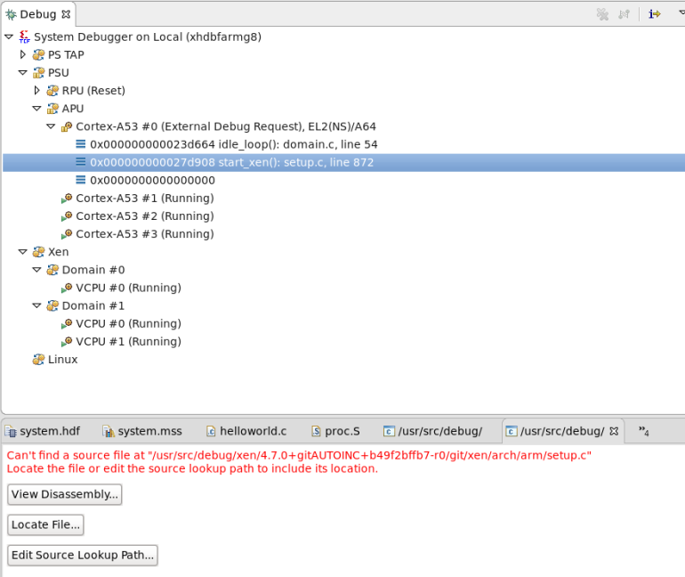

Debugging Hypervisor
-
Boot Xen and Dom-0.
For details on how to boot Xen and Dom-0, refer UG1144 - PetaLinux Tools Documentation: Reference Guide.
-
Enable Xen awareness by enabling OS aware debug for Xen symbol file. Symbol
files are added to a process context to enable source level debugging.
For details on how to enable Xen awareness, refer Enabling Xen Awareness.
- The Debug view will be updated with the list of processes running on the Linux kernel, once the OS aware debugging is enabled. The processes list will be updated for the first time once the processor core is halted and dynamically there after (new processes will be added to the list and terminated processes will be removed).
-
Click Edit Source Lookup Path to set the path mappings
for the selected debug configuration. Debugger uses path map to search and load
symbols files for all executable files and shared libraries in the system.

Note: Path Map is used for both symbols and source lookups. - Add a breakpoint or suspend the core. As soon as the breakpoint is hit, the debug view is updated with all the information.
- You can now insert breakpoints, step in, step out, watch variables, stack trace or perform other source level debugging tasks.